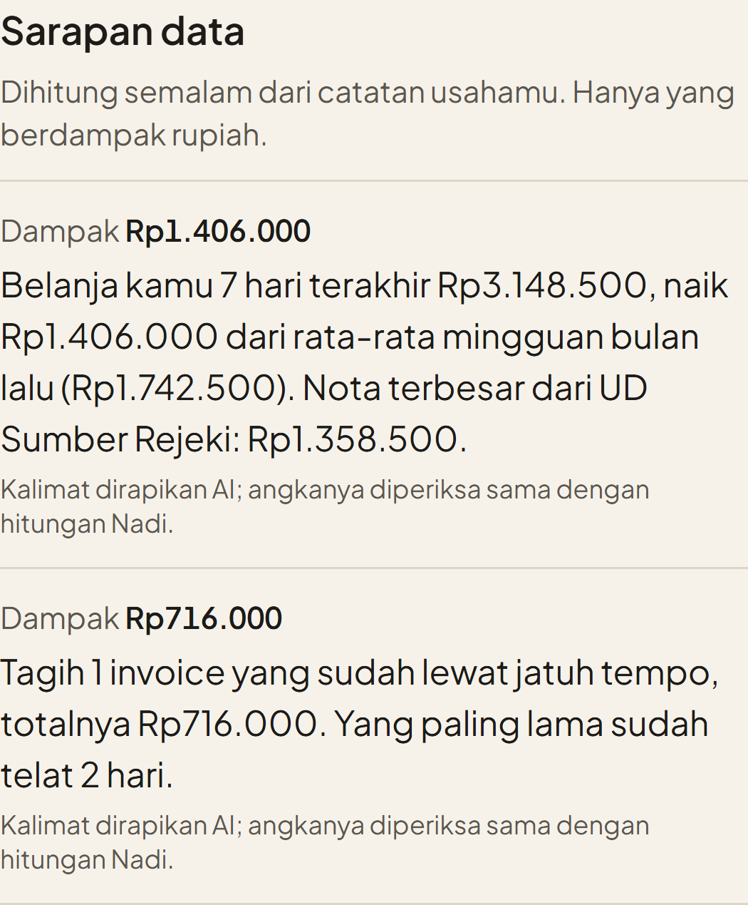

Pagi ini,
apa yang penting?

Sarapan data.
Dihitung semalam dari catatan usahamu. Hanya yang berdampak rupiah, paling banyak tiga.
nadi
Coba usaha contohnya.
Tanpa daftar.
nadi-swart.vercel.app/demo